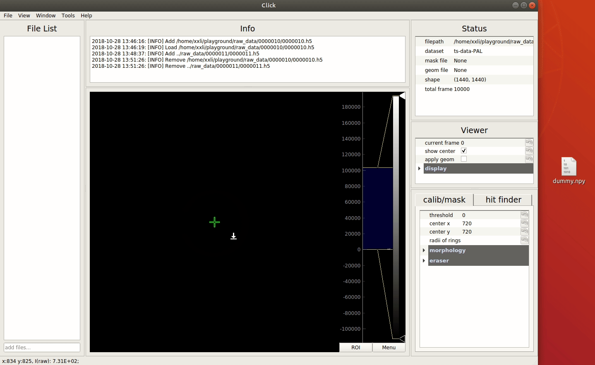
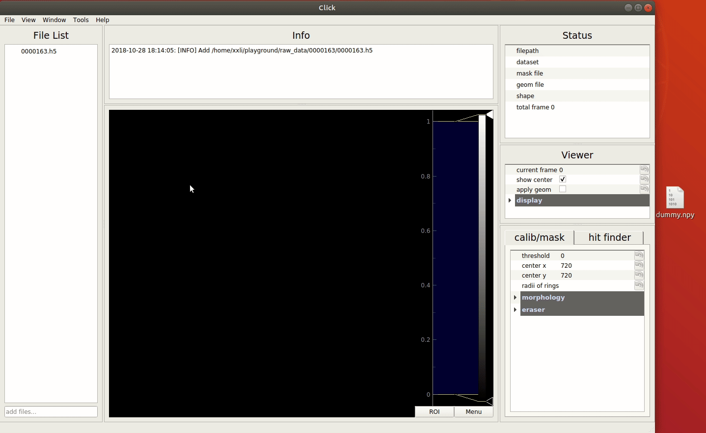
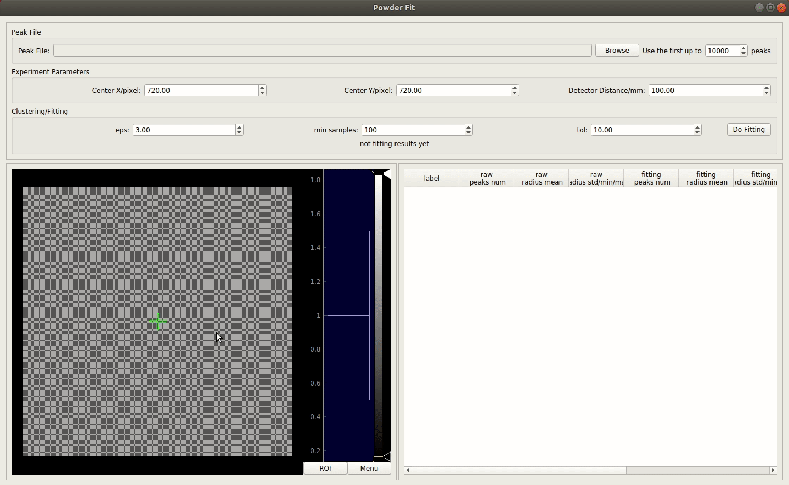
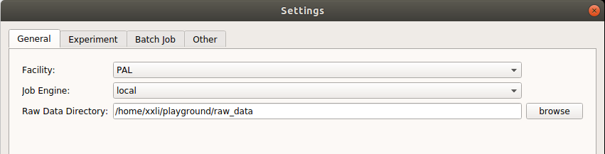
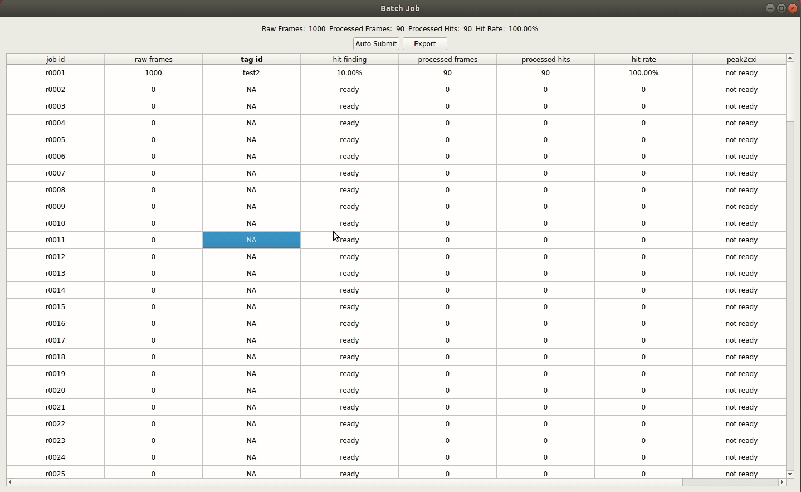

PAL Tutorial
Project Setup
Create a project,
1 | python /path/to/Click/gui.py startproject project_name -f PAL |
Click will create a folder with the name of project_name and setup all configurations and subfolders. Look at what Click created:
1 | project_name |
Start analysis with Click.
1 | cd project_name |
Data Visualization
To visualize and analyze data in the main window, users need add data files to the File List.

After data files added into the File List, double click one data item. If it’s a single-dataset format, like npy, Click will load and display it directly. Otherwise it may prompt a dialog, then users can select a dataset for visualization. Users can also right click the data item and select select and load dataset in the popup menu.

Mask Preperation
Usually mask is created from a mean/sigma image, which is generated from multiple frames of raw data(right click a data item and select calculate mean/sigma, the result file will be saved in mean folder in your project). Users can select a threshold to generate the initial mask, then refine it by morphology operations.
Tip: enable mask view by click View -> Show Calib/Mask View, then you can visualize the raw image (left) and current mask(right) in the central image viewer.

Besides, users can use mask eraser to make an arbitrary shape of mask(DO NOT use mask eraser and morphology operation at the same time, it will be too slow), this is very handy to make a beam stop mask.

Finally, users can multiply multiple mask to generate a combined mask.

Basic Calibration
Users can perform basic calibration (determine beam center) on a powder diffraction dataset in 2 steps:
- calculate mean/sigma of powder diffraction images
- adjust center and radii of rings to fit the powder rings of the sigma image

Tip: You can fit multiple rings using multiple radii parameters seperated with comma like 200,300,400
Hit finding parameters tuning
Hit finding parameters tuning is the core function of Click, it’s also the premise of peak powder generation. Users can try different hit finder (SNR model and Poisson model) and adjust parameters in real time. Found peaks will be plotted in green circles in the central image viewer. A proper mask can be set to ignore invalid region. Once parameters tuning done, users can save the configuration file in conf/hit_finding folder.
Tip: open pixel inspector and peak table to check the peak finding results.

Peak Powder Generation
To generate peak powder images, just right click on the powder diffraction data, select generate peak powder, specify hit finding configuration file and other parameters in the popup dialog. Submit the powder job and wait until the job done.

Fine Calibration
Once you have a peak powder file, geometry calibration is pretty simple. Click Window -> Powder Fit to open the Powder Fit window and load a peak powder file. Set estimated beam center and other parameters, click Do Fitting, the fitting results are shown in the image viewer(bottom left) and statistical table(bottom right). Fitted beam center and tilting angles are shown in the middel.
Users can optimize detector distance since we know the lattice parameters of powder sample. In this example, we use LaB6 sample, so the resolution of each powder ring can be calculated as below.
| ring order | hkl | resolution/Å |
|---|---|---|
| 1 | 001 | 4.157 |
| 2 | 011 | 2.939 |
| 3 | 111 | 2.400 |
| 4 | 002 | 2.078 |
| 5 | 012 | 1.859 |
| 6 | 112 | 1.697 |
To optimize the detector distance, double click the resolution cell in statistical table and update to correct value.

Batch Job System
Before you submit batch jobs, check the settings of Click. If you are working at PAL-XFEL, make sure the Facility is set to PAL and Job Engine is set to pal in the General tab of setting dialog. The raw data directory is the root folder of raw data, it’s usually in the ue_xxxxxx_SFX at PAL-XFEL.

In batch settings, users can select configuration file of hit finding and minimal peak numbers for a hit. If all the settings are fine, click Window -> Job Table to start batch job system.
Right click any row in the job table, select run hit finder to perform hit finding job for this run. When the a hit finding job is done, users can save all to cxi for further analysis. Besides, users can click view hits to check hit finding results of this run.
